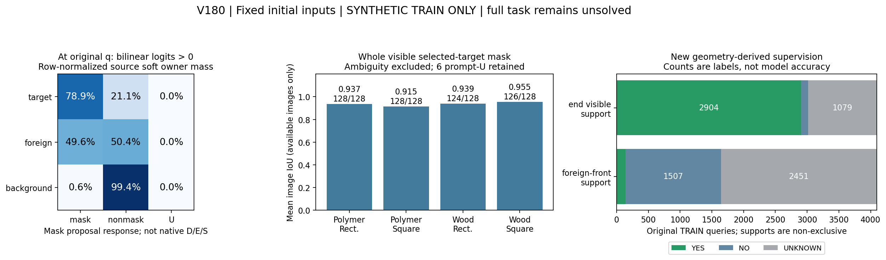
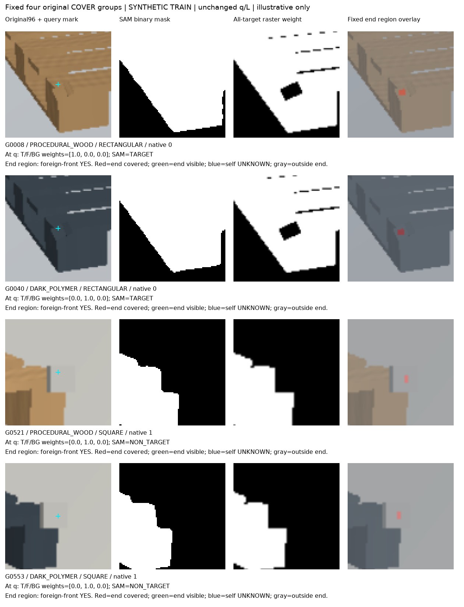

합성 TRAIN에서 실제 실행과 감독 생성까지 완료했습니다. 사용자 데이터 성능 개선·모델 채택·전체 해결은 아직 입증하지 않았습니다. 초기 q/L/native8과 PnP는 그대로이며 이번 단계의 새 학습은 0회입니다.
공식 SAM ViT-B에 초기 8점의 min/max 박스만 넣었습니다. GT 박스·양성 키포인트·부위 정답을 입력하지 않았습니다. 512장 중 초기 8점이 없는 6장은 보류, 506장 추론과 첫 장 반복을 완료했고 원 U80을 보존했습니다. 마스크 threshold는 공식 0으로 고정했습니다.

전체 대상 마스크 평균 IoU: 0.9364 (가용 506장). 원 q의 팔레트 소속 soft 재현율: 78.9%, precision: 94.0%. 외부 물체 소속 질량에 nonmask 응답: 50.4%, 배경 소속 질량에는 99.4%.
원 4,096행 중 q 소속 측정은 4,048행, q 결측은 48행입니다. 측정 행의 INVALID/예측 U 질량 32은 별도로 보존했으며, 결측 48행을 합친 원 입력 U는 총 80행입니다.
모두 합성 TRAIN의 저장 raster 기준이며 실사 전이 정확도가 아닙니다. nonmask에는 배경과 다른 물체가 함께 들어가므로 이를 외부 가림 판정으로 바꾸지 않았습니다. 전체 면적 IoU가 높아도 작은 가림 영역을 놓칠 수 있습니다.
| 합성 그룹 | 가용/전체 영상 | 평균 마스크 IoU | Foreign 위 오포함 pixel |
|---|---|---|---|
| DARK_POLYMER / RECTANGULAR | 128/128 | 0.9371 | 8589 |
| DARK_POLYMER / SQUARE | 128/128 | 0.9152 | 12118 |
| PROCEDURAL_WOOD / RECTANGULAR | 124/128 | 0.9392 | 7872 |
| PROCEDURAL_WOOD / SQUARE | 126/128 | 0.9545 | 10990 |
원 crop 안의 고정된 작은 팔레트 끝 영역에서 보임 YES/NO/UNKNOWN은 2904/113/1079입니다. 해당 영역 앞의 외부 차폐는 138/1507/2451입니다. 두 조건은 비배타적이며 부분 가림에서는 함께 YES일 수 있습니다. 자기 가림·대응 불명·원 입력 결측은 따로 남겼고 기존 native D/E/S를 교체하지 않았습니다.
고정 16장에는 확인된 foreign-front 원 픽셀이 합계 58개뿐입니다. 그중 BEFORE와 RGB가 완전히 같은 픽셀은 1개입니다. 같은 재질 가림의 대비가 작다는 관찰은 있으나, 영상이 동일하거나 추론 불가능하다는 증거는 아닙니다. 새 감독의 training_admission은 false이며 새 head fit은 아직 수행하지 않았습니다.

각 그룹의 원 COVER 대상 슬롯을 모두 표시했습니다. G40에서는 외부 물체 소속인 원 q를 SAM이 대상으로 포함합니다. G521/553에서는 배경색과 비슷한 가림물을 마스크에서 제외합니다. G8은 원 q 자체는 대상에 속하지만 주변의 지정 끝 영역은 가려져 있어, 두 정답이 다를 수 있음을 보여줍니다. 이 네 장에서는 형상과 가림물 재질 조건도 함께 달라지므로 형상만의 효과로 해석하지 않습니다.
고정 16장·128개 SAM/원 crop/대상 raster 대조 · 동일 128개의 부위 보임·차폐 감독 위치
첫 SAM 실행은 Torch 2.1의 strict deterministic cumsum guard에서 종료됐습니다. 공식 모델 코드는 그대로 두고 predict 구간의 guard만 완화했으며 CPU/CUDA ones-grid 일치·첫 영상 반복·가중치 불변을 확인했습니다. 저장 평가기의 행 병합/함수명 충돌 두 오류도 실패 기록을 보존한 뒤 수정했습니다. 입력·마스크·문턱·정답 기준을 고친 것은 아닙니다.
사용자223장과 공개 보류45프레임의 원영상·특징·개별 주석을 이번 단계에서 추가로 열람하거나 적합에 사용하지 않았습니다. 기존 v178 실사 결과는 그대로입니다. 다음에는 이 영역별 감독의 실제 학습 효과와 공개 실사에서의 대상 식별·작은 외부 가림 구분을 검증해야 합니다. SAM 마스크 하나를 가림 모델로 채택한 상태는 아닙니다.
PNG는 별도 실제 시각 QA 기록을 확인하십시오. 이 HTML은 파일 링크 및 소스 검사를 하며 브라우저 렌더 완료를 주장하지 않습니다.